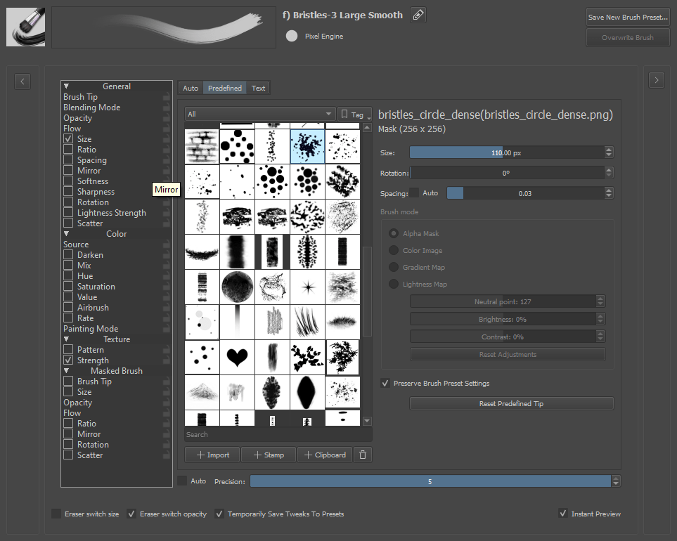

筆尖¶
自動筆刷¶
筆尖基本是圓形或方形。這種筆尖是 Krita 根據特定參數生成。
遮罩類型¶
筆刷有三種遮罩，圓形和方形筆尖均適用：
- 預設
這是最常見的類型。淡化參數呈現出下列效果。在三種自動筆尖中，處理的速度最快。

- 柔和
這個淡化是藉由調整曲線控制！

- 高斯
這使用高斯（模糊）演算法來確定淡化。 在三個自動筆刷中是最慢的。

參數¶
- 直徑
筆刷的像素大小。
- 寬高比（長寬比）
筆刷的外形縱橫比。

- 淡化
這設定了筆刷的柔軟度。 您可以點擊鎖鏈符號來鎖定和解鎖這些設定。 淡化每種遮罩類型都有不同的效果，所以如果它看起來很奇怪，請不要驚慌，也許您的遮罩類型有誤。

淡化鎖定（水平 = 垂直）。

水平和垂直分別淡化。
- 角度
這會改變筆刷的角度 。

- 尖峰數
尖峰數量，它的效果與寬高比（長寬比）有關。

- 密度
此參數調整筆刷填充的濃密度，會有噪點效果。下圖密度分別為 0%、50%、100% 。

- 隨機度
此參數調整密度的隨機程度。下圖隨機度分別為 0%、50%、100% 。

- 間距
此參數調整筆尖在畫布上留下筆跡的間距。左下圖間距分別為 0、1、5 。
- 自動（間距）
勾選此項後筆刷間距將會使用一種不同的算法（平方），可以對間距進行更細致的控制。下圖右側三張圖是自動模式下間距分別為 0、1、5 。

- 平滑線
勾選此項後會啟用抗鋸齒超平滑功能。下圖兩個筆刷都是使用淡化設定為 0 的預設筆刷繪製的。左側沒有啟用平滑線，右側有。對於線稿筆刷非常有用。此選項最好與自動間距結合使用。

- 精度
這會改變筆刷繪製的平滑程度。精度越低則越快，但繪製效果越差。使用線搞筆刷的精度最好為 5，而大面積填色則不需要這樣的精度，可將精度設定為 1 來加快速度。
- 自動（精度）
筆刷精度按照筆刷大小自動調整。舉例如下的第一個值是不同筆刷大小對應的精度，第二個值是最大精度為 5 的筆刷大小。
例如：「起始畫筆大小」為 10 和「增量」為 4 的筆刷將具有…
筆刷大小為 10 則精度為 5
筆刷大小為 14 則精度為 4
筆刷大小為 18 則精度為 3
筆刷大小為 22 則精度為 2
筆刷大小為 26 以上則精度為 1。
預製筆刷¶
如果您使用過其他應用程式，例如 GIMP 或 Photoshop，您就會使用這種筆刷。 Krita （大部分）與這些程式的筆尖定義檔兼容：
- abr
GIMP 自動筆尖定義。
- *.gbr
GIMP 單個點陣圖筆尖。可以是黑白或彩色。
- *.gih
GIMP 影像軟管筆刷：包含一系列隨機或依次繪製的筆尖。可以是黑白的，也可以是彩色的。 Krita 尚不支持所有參數。
- abr
Photoshop 筆刷集合。我們支持這種筆刷的大部分功能，但尚未支持一些高級功能。
注意，由於 Adobe 未公開規範，因此 ABR 筆刷的定義已進行逆向工程。我們強烈建議每個 Krita 用戶分享 GBR 和 GIH 格式分享筆尖。如果筆刷比較復雜，可把筆刷預設作為 Krita 資源包導出分享。
所有預定義的筆尖都顯示在一個選擇器中。有四個選項會影響您的初始點陣圖筆尖：
- Size
縮放筆尖。1.0 是筆尖的原始大小。這可能相當大！當繪畫大小不同（例如受壓力控制）時，這將作為計算的基準點。
- 旋轉
筆尖的初始旋轉方向。
- 間距
筆尖印痕的間距。
筆刷模式¶
不同的模式顯示不同的筆尖。¶
- 透明度遮罩
對於彩色筆刷，請不要使用實際顏色繪製，而是製作一個灰度筆尖，該筆尖將根據您選擇的前景色／背景色著色。較亮的區域將被視為高透明度。
- 為影像上色
完全按原樣使用筆尖影像本身。特別適用於影像圖章。
- 亮度映射
在 4.3 版本新加入: 結合了透明度遮罩和影像圖章模式的功能。透明度在影像圖章模式中保持不變，但畫筆中的顏色或灰色調被前景色取代。筆尖影像的亮度值（如果在 HSL 模式下思考）被保留，因此影像的暗部是暗的，而亮部是亮的。這允許您可以選擇顏色的影像圖章，但保留高光和陰影，甚至可以通過模擬由油漆和筆刷筆畫的紋理引起的高光和陰影（有時稱為「厚塗」效果）。
有 3 個滑動條，用於在亮度或漸變模式下控制當前筆尖的確切感覺：
- 中性點
與當前的前景色相同的亮度級別。高於此值的將是當前前景色的較亮版本，以及當前顏色的較低、較暗版本。
- 亮度
使整個筆尖更亮或更暗。
- 對比
增加筆尖暗區和亮區之間的對比度。
- 漸變映射
在 4.4 版本新加入: 使用筆尖影像的亮度值作為漸變映射。黑色映射到漸變的左側，白色映射到漸變的右側。使用的漸變是主視窗中當前選擇的漸變，因此您可以在繪畫時快速輕鬆地更改漸變。此模式允許使用可以更改的多種顏色的影像圖章（非常適合花卉或其他五顏六色的植物），並且可以允許使用多種顏色的畫筆。亮度貼圖模式的影像調整滑動條也可用於此模式。此模式的教程在這裡：漸層貼圖筆刷技巧 。